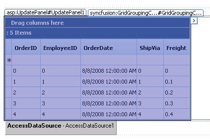

With Essential GridGroupingControl, it allows codeless support to work with ASP.NET AJAX UpdatePanel. Just place the GridGroupingControl inside the UpdatePanel to enable AJAX.
All the default functionalities like Grouping, Sorting and Filtering would work normally with the UpdatePanel.
|
[ASPX]
<asp:ScriptManager ID="ScriptManager1" runat="server" EnablePartialRendering="true" /> <asp:UpdatePanel ID="UP" runat="server" ChildrenAsTriggers="true" UpdateMode="Conditional"> <ContentTemplate> <syncfusion:GridGroupingControl ID="GridGroupingControl2" runat="server" AutoFormat="Vista" DataSourceCachingMode="ViewState" DataSourceID="AccessDataSource1"> <TableDescriptor> <Columns> <syncfusion:GridColumnDescriptor MappingName="OrderID" /> <syncfusion:GridColumnDescriptor MappingName="CustomerID" Width="200" /> <syncfusion:GridColumnDescriptor MappingName="EmployeeID" /> <syncfusion:GridColumnDescriptor MappingName="OrderDate" /> <syncfusion:GridColumnDescriptor MappingName="Freight" /> <syncfusion:GridColumnDescriptor MappingName="ShipName" /> </Columns> </TableDescriptor> </syncfusion:GridGroupingControl> </ContentTemplate> </asp:UpdatePanel> |

Figure 129
 Note: The default callback mechanism is marked as
obsolete. So you have to set the EnableCallbacks property to False, to enable
working with the UpdatePanel properly.
Note: The default callback mechanism is marked as
obsolete. So you have to set the EnableCallbacks property to False, to enable
working with the UpdatePanel properly.
Performance Tuning with SFScriptManager
A ScriptManager that works in tandem with the GridGroupingControl's architecture has been derived for better optimizations. The SFScriptManager, by default, will combine all the scripts into a single file and load it onto the browser, enabling faster page load and reduced round trips. Additionally, it has properties that would allow you to minify the javascript that gets loaded.